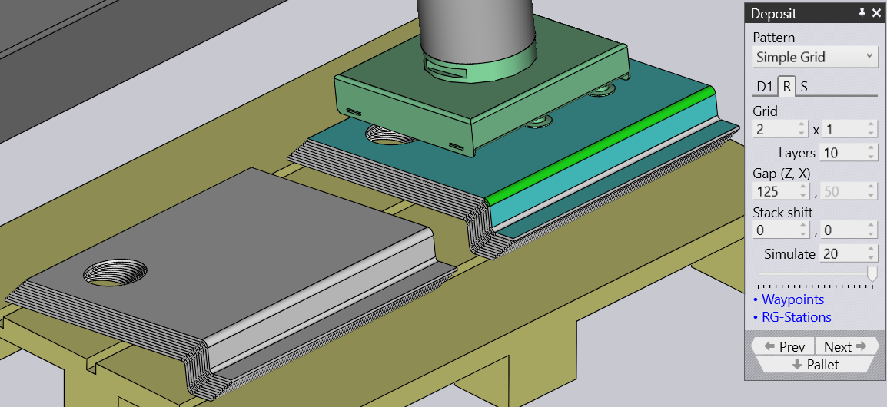
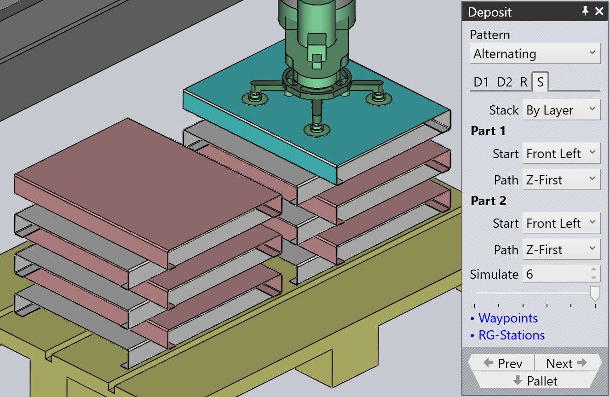

Repeat dan sequence
Repeat grid
Tab D1 dan D2 yang ditampilkan di atas digunakan untuk menentukan orientasi komponen pertama dari deposit. Kemudian, pengaturan di tab Repeat digunakan untuk mereplikasi itu menjadi grid baris (Z), kolom (X) dan lapisan (R). Gambar di samping menunjukkan deposit dengan banyak pengaturan ini diubah dari default.

-
Pengaturan Grid digunakan untuk mengatur jumlah kolom dan baris dalam deposit.
-
Pengaturan Layers menentukan berapa banyak komponen yang ditumpuk di atas satu sama lain di setiap pile.
-
Pengaturan Gap (Z, X) digunakan untuk menentukan jarak antara kolom berturut-turut atau baris berturut-turut. Jika Anda mengatur ini ke 0, baris atau kolom tepat saling bersentuhan.
-
Pengaturan Stack shift digunakan untuk memindahkan tumpukan lengkap dari semua komponen menjauh dari pusat palet.
Deposit sequence

Tab Sequence digunakan untuk mengontrol urutan di mana komponen dideposit. Pengaturan pada tab sequence ini ditunjukkan di samping. Dalam contoh ini, ada dua orientasi deposit D1 dan D2, dan ada dua set pengaturan sequence yang sesuai (ini berarti Anda dapat memulai lapisan D1 dari satu sudut, sementara lapisan D2 dapat dimulai dari sudut yang berbeda).
-
Pengaturan Stack memiliki dua opsi: By Layer atau By Pile. Dalam contoh ini, penumpukan By Layer akan membangun kedua pile yang berdekatan secara bersamaan - ini berarti deposit berturut-turut akan terjadi di pile 1, pile 2, pile 1, pile 2 dll. Dengan demikian kedua pile akan naik ketinggian bersama-sama. Ketika Anda menumpuk By Pile, semua komponen dari pile di sebelah kiri dideposit terlebih dahulu sebelum kita mulai menempatkan komponen apa pun pada pile kanan.
-
Pengaturan Start corner dan Path digunakan ketika ada beberapa baris atau kolom, dan memutuskan sudut mana penumpukan dimulai, dan apakah penumpukan kemudian berlanjut baris-demi-baris, atau kolom-demi-kolom. Ini bisa berguna terutama dengan gripper off-center, karena sudut awal yang berbeda dapat menyebabkan tabrakan antara gripper dan komponen sebelumnya yang telah dideposit.


-
Gambar menunjukkan contoh di mana kita mulai dari sudut Rear Right dan melanjutkan untuk deposit X-First (angka 1, 2, 3, 4 menunjukkan urutan deposit dalam lapisan ini). Jika kita memulai deposit ini dari sudut bawah Front Left (default), kita akan memiliki situasi bahwa ketika kita mendeposit komponen kedua di lapisan, gripper akan bertabrakan dengan komponen sebelumnya (karena melampaui off-center dari batas komponen).
-
Pengaturan Simulate (baik spinner nomor maupun slider) dapat digunakan untuk scrub melalui deposit untuk melihat urutan di mana mereka terjadi pada palet. Ini sangat berguna ketika menyesuaikan sudut awal dan pengaturan path. Pada gambar di atas, kita melihat deposit komponen 17 (dari 20). Jika kita memindahkan slider ke kanan (atau menyesuaikan nilai dalam kotak input Simulate), Anda dapat melihat gripper dalam posisi untuk deposit 18, 19 dan 20.